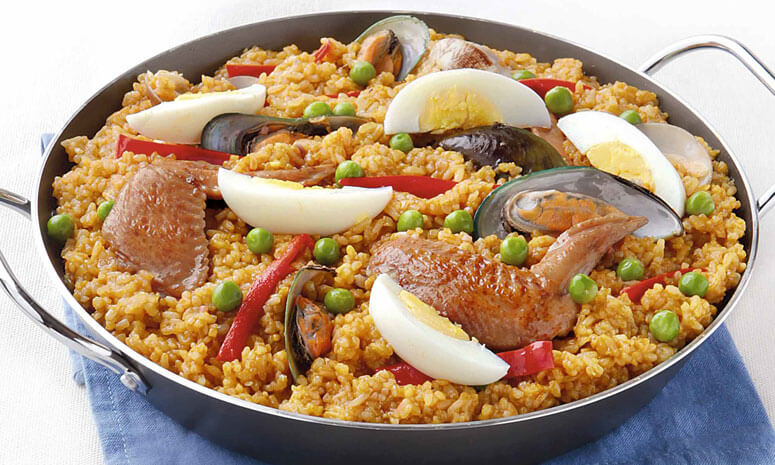

Paella Recipe

Description
An easy to make paella using chorizo, chicken, and shrimp.
Ingredients
- 2 tablespoons olive oil
- 1 tablespoon paprika
- 2 teaspoons dried oregano
- salt and black pepper to taste
- 2 pounds skinless, boneless chicken breasts, cut into 2 inch pieces
- 2 tablespoons olive oil, divided
- 3 cloves garlic, crushed
- 1 teaspoon crushed red pepper flakes
- 2 cups uncooked short-grain white rice
- 1 pinch saffron threads
- 1 bay leaf
- ½ bunch Italian flat leaf parsley, chopped
- 1 quart chicken stock
- 2 lemons, zested
- 2 tablespoons olive oil
- 1 Spanish onion, chopped
- 1 red bell pepper, coarsely chopped
- 1 pound chorizo sausage, casings removed and crumbled
- 1 pound shrimp, peeled and deveined
Preparation
- In a medium bowl, mix together 2 tablespoons olive oil, paprika, oregano, and salt and pepper. Stir in chicken pieces to coat. Cover, and refrigerate.
- Heat 2 tablespoons olive oil in a large skillet or paella pan over medium heat. Stir in garlic, red pepper flakes, and rice. Cook, stirring, to coat rice with oil, about 3 minutes. Stir in saffron threads, bay leaf, parsley, chicken stock, and lemon zest. Bring to a boil, cover, and reduce heat to medium low. Simmer 20 minutes.
- Meanwhile, heat 2 tablespoons olive oil in a separate skillet over medium heat. Stir in marinated chicken and onion; cook 5 minutes. Stir in bell pepper and sausage; cook 5 minutes. Stir in shrimp; cook, turning the shrimp, until both sides are pink.
- Spread rice mixture onto a serving tray. Top with meat and seafood mixture.